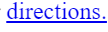
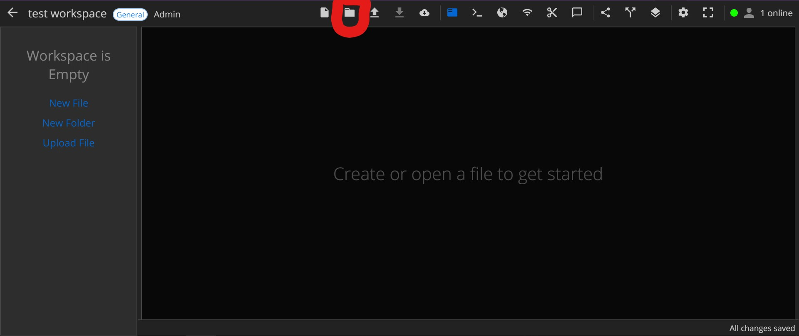
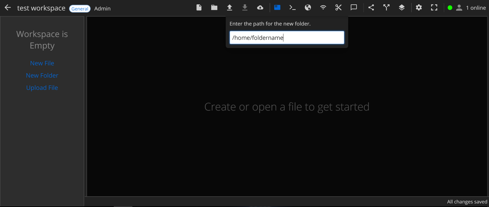
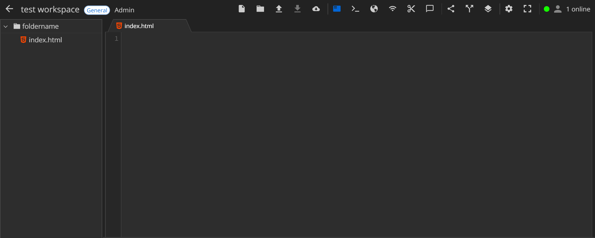

Validation is the process where you check that your page validates as html5, which is the most modern type of html. But why should you validate? Validation teaches beginners what is right and wrong about their webpage because they have to fix mistakes themselves. It also just neat, nice and it's easy to navigate and access once its been validated. Follow this link for a good validation page. This page can also clean up your HTML, and loads of other features. To use it copy and paste your website link into the bar and it will tell you whats wrong!
Another important thing for a web page is using links. Links can be helpful for display information off of the main HTML page, like directions to your cafe for example. To do this you must create a seperate HTML Document with the information you would like to display. Then, on your main page on the word you would like to link, type “ <a src=“directions.html”> the desired word to link </a>. ” it will look like this

The circled Red word is the word that will be made the clickable link on the website like this
Once you click it, you will be directed to the desired web page.
As well as knowing HTML you must also have good file organisation on edstem. Folders are very helpful to store information, such as images, or files. To do this you click the folder icon in the top utility bar.
You then name the folder what it is intended for.
Once the folder has been created you drag the file into the folder.
The way to deal with this and links is too put the folder name in front of it. For example